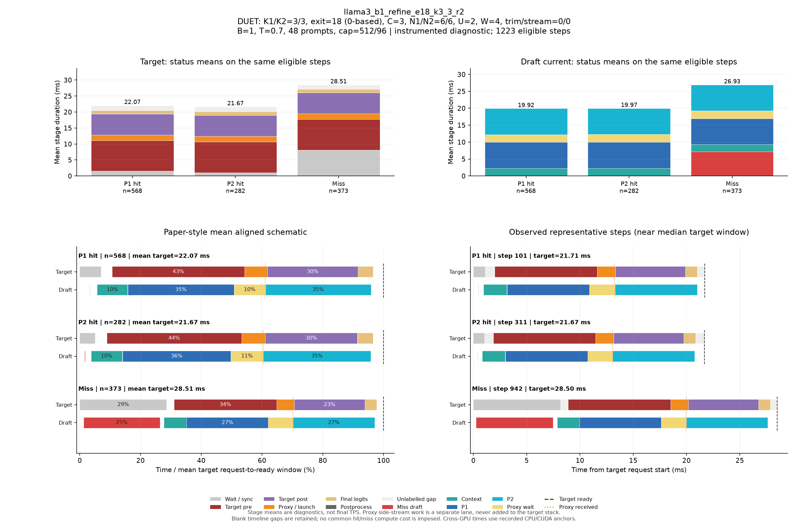

DUET: K1/K2=3/3, exit=18 (0-based), C=3, N1/N2=6/6, U=2, W=4, trim/stream=0/0
| Pass | 용도 | N | B | T | Seed | AL* | Cache hit | TPS* | Raw TPS |
|---|---|---|---|---|---|---|---|---|---|
| 0 | profile-diagnostic | 48 | 1 | 0.7 | 5100 | 2.648 | 69.14% | 92.55 | 92.53 |
Input/output cap: 512/96 · GPUs: 4,5 · draft seed: 0 · source: 58326e9c3f53374028d73f93e3fe738a52608938
PNG · 벡터 PDF · 원본 결과 JSON
세부 trace: 1223 eligible steps. Target 원본 · Draft 원본
제외 수: {"initial": 19, "output_boundary": 44, "capture_or_next": 10}
왼쪽 아래는 상태별 평균 정렬 schematic, 오른쪽 아래는 실제 대표 step입니다. %의 분모는 각 상태의 평균 target request→ready 시간이며 phase overlap은 별도 lane에 표시합니다.

{
"args": {
"target": "/data/chokwans99/models/layerskip-llama3-8B",
"draft": "/home/chokwans99/models_mlsys/Qwama-0.5B-Instruct",
"mode": "duet-tree",
"batches": [
1
],
"temperatures": [
0.7
],
"seeds": [
5100
],
"target_tp": 1,
"prompts": "/home/chokwans99/PSD-mlsys-coverage/results/mlsys_coverage/round5/tuning48.json",
"limit": 0,
"max_new_tokens": 96,
"max_model_len": 2048,
"input_cap": 512,
"k1": 3,
"k2": 3,
"draft_fan_out": 2,
"proxy_fan_out": 1,
"p1_tree": true,
"p1_verify_nodes": null,
"p2_verify_nodes": null,
"exit_layer": 18,
"p1_nodes": 6,
"p2_nodes": 6,
"tree_width": 3,
"p1_roots": 2,
"p2_budget": null,
"tree_root_count": null,
"tree_beta": 0.5,
"tree_proxy_threshold": 0.01,
"tree_conf_threshold": 0.03,
"root_source": "complement",
"root_normalization": "full",
"root_overlap_mix": 0.25,
"memory_fraction": 0.45,
"ignore_eos": false,
"greedy_only": false,
"audit_preemption": false,
"ragged_limits": false,
"tree_calibration_dir": null,
"preflight_test": null,
"output": "/home/chokwans99/PSD-mlsys-coverage/results/mlsys_coverage/round5/llama3_b1_refine_retry/llama3_b1_refine_e18_k3_3_r2.json"
},
"engine_kwargs": {
"num_gpus": 2,
"max_num_seqs": 1,
"max_model_len": 2048,
"max_num_batched_tokens": 2048,
"gpu_memory_utilization": 0.45,
"speculate": true,
"draft_async": true,
"greedy_only": false,
"jit_speculate": true,
"speculate_k": 6,
"async_fan_out": 3,
"duet_p1_tree_policy": "on",
"duet_p2_tree_policy": "on",
"draft": "/home/chokwans99/models_mlsys/Qwama-0.5B-Instruct",
"duet_enabled": true,
"duet_exit_layer": 18,
"duet_phase1_k": 3,
"duet_phase2_k": 3,
"duet_draft_fan_out": 2,
"duet_p2_tree_max_nodes": 6,
"duet_p2_tree_verify_nodes": 6,
"duet_p1_tree_max_nodes": 6,
"duet_p1_tree_verify_nodes": 6,
"duet_tree_c_tensor": 3,
"duet_p1_roots_per_position": 2,
"duet_p2_budget": null,
"duet_tree_root_count": null,
"duet_tree_beta": 0.5,
"duet_tree_proxy_threshold": 0.01,
"duet_tree_conf_threshold": 0.03,
"duet_root_source": "complement",
"duet_root_normalization": "full",
"duet_root_overlap_mix": 0.25
},
"env": {
"CUDA_VISIBLE_DEVICES": "4,5",
"SSD_CUDA_ARCH": "8.9",
"SSD_ATTN_BACKEND": "auto",
"SSD_DIST_PORT": "29814",
"OMP_NUM_THREADS": "4",
"SSD_SEED": "0",
"SSD_CHAIN_PROXY_GRAPH": "1",
"SSD_FAST_VERIFY": "1",
"SSD_BATCHED_PROXY_GRAPH": "1",
"SSD_DUET_EXIT_REPLICA": "0",
"SSD_ASYNC_PROXY_SEND": "1",
"SSD_PROXY_STREAM": "0",
"SSD_BATCHED_TREE": "1",
"SSD_TREE_EXPANSION_POLICY": "reach_gain_frontier",
"SSD_TREE_REACH_CALIBRATION": "/home/chokwans99/PSD-mlsys-coverage/results/mlsys_coverage/round4/calibration/reach.json",
"SSD_TREE_GAIN_CALIBRATION": "/home/chokwans99/PSD-mlsys-coverage/results/mlsys_coverage/round4/calibration/gain.json",
"SSD_DUET_MISS_K": "4",
"SSD_TREE_FUSED_MATH": "1",
"SSD_BATCH_TREE_BULK_EXPORT": "1",
"SSD_TREE_PARALLEL_INSERT": "0",
"SSD_PROFILE_DUET": "1",
"SSD_PROFILE_DUET_MAX_EVENTS": "100000",
"SSD_TREE_SHAPE_METRICS": "1",
"SSD_PROFILE_DIR": "/home/chokwans99/PSD-mlsys-coverage/results/mlsys_coverage/round5/profiles/llama3_b1_refine_e18_k3_3_r2",
"SSD_HF_CACHE": "/data/chokwans99/models",
"SSD_DATASET_DIR": "/home/chokwans99/PSD-mlsys-coverage/results/mlsys_coverage/round5"
},
"effective_features": {
"fast_verify": true,
"batched_proxy_graph": true,
"exit_replica": false,
"jit_speculate": true,
"duet_jit_short": true,
"miss_depth": 4,
"miss_width": 1,
"tree_fused_math": true,
"tree_parallel_insert": false,
"bulk_export": true
},
"resolved_env": {
"SSD_CUDA_ARCH": "8.9",
"SSD_ATTN_BACKEND": "auto",
"SSD_DIST_PORT": "29814",
"SSD_SEED": "0",
"SSD_CHAIN_PROXY_GRAPH": "1",
"SSD_FAST_VERIFY": "1",
"SSD_BATCHED_PROXY_GRAPH": "1",
"SSD_DUET_EXIT_REPLICA": "0",
"SSD_ASYNC_PROXY_SEND": "1",
"SSD_PROXY_STREAM": "0",
"SSD_BATCHED_TREE": "1",
"SSD_TREE_EXPANSION_POLICY": "reach_gain_frontier",
"SSD_TREE_REACH_CALIBRATION": "/home/chokwans99/PSD-mlsys-coverage/results/mlsys_coverage/round4/calibration/reach.json",
"SSD_TREE_GAIN_CALIBRATION": "/home/chokwans99/PSD-mlsys-coverage/results/mlsys_coverage/round4/calibration/gain.json",
"SSD_DUET_MISS_K": "4",
"SSD_TREE_FUSED_MATH": "1",
"SSD_BATCH_TREE_BULK_EXPORT": "1",
"SSD_TREE_PARALLEL_INSERT": "0",
"SSD_PROFILE_DUET": "1",
"SSD_PROFILE_DUET_MAX_EVENTS": "100000",
"SSD_TREE_SHAPE_METRICS": "1",
"SSD_PROFILE_DIR": "/home/chokwans99/PSD-mlsys-coverage/results/mlsys_coverage/round5/profiles/llama3_b1_refine_e18_k3_3_r2",
"SSD_HF_CACHE": "/data/chokwans99/models",
"SSD_DATASET_DIR": "/home/chokwans99/PSD-mlsys-coverage/results/mlsys_coverage/round5",
"SSD_FORCE_SPLIT_K1K2": "1",
"SSD_DUET_JIT_SHORT": "1",
"SSD_SHM_NAME": "ssd_2505477"
},
"runtime_source_sha256": {
"ssd/ssd/__init__.py": "f1a221b38f55b42ef0619cba48a411acbbd1965c4845b4643f77443b7ce77950",
"ssd/ssd/config.py": "ec9ffe1c84257a2e2ec10c39995340f8941f9f3c400c48c18cfa7c3e4db3b220",
"ssd/ssd/engine/block_manager.py": "05d873619b419d31f47b4be4025bc7c9f11759f5f0bc3f65fbff3a1e8f94660a",
"ssd/ssd/engine/draft_runner.py": "cdf793b4718e576bcc10a638fcff577eef9cf21cc1f38a9fc27c333c3cfe5cee",
"ssd/ssd/engine/helpers/batch_tree_common.py": "739feeb975c20d0adbdae51735b8983aa6cae8b59d6237b285db0c766d558f27",
"ssd/ssd/engine/helpers/batch_tree_draft.py": "f361030685350183884cc55b9058945515bb00da53fc86541f7902bfd2138528",
"ssd/ssd/engine/helpers/batch_tree_forward.py": "0c6079d2bdbf7ecc000b2a98b94b49b1942939d34ada80b15f57510de8a20940",
"ssd/ssd/engine/helpers/batch_tree_inputs.py": "c0a05d13ba0e63ecbc920425ddd6a98dc60001d93d73085e75d2d4a9b110a066",
"ssd/ssd/engine/helpers/batch_tree_roots.py": "ad3c4e772392c1043284ac4912d606543f3fd76167135b73e4f72a700e6820c7",
"ssd/ssd/engine/helpers/batch_tree_sampling.py": "46f36658cb189bc080ae0d4b8561f84662290facacccf6600f129eb6e93ee66b",
"ssd/ssd/engine/helpers/batch_tree_verify.py": "2da945efe3ba4b2673377a2f5c497528ab0c6cf4d7fd7edfbdb23b6c9c619ede",
"ssd/ssd/engine/helpers/batched_proxy.py": "6ed4f9b85ff8cf9c24b7ad43a1b7377d08123eeef5307366a373dacda184da86",
"ssd/ssd/engine/helpers/batched_tree_executor.py": "098d64cad2d20d96091631f6bc91da73b1e893ec400c3431a4ed68d007a9ef45",
"ssd/ssd/engine/helpers/cudagraph_helpers.py": "0436aec61d05d0b79696a48665042e364f3f4c50d853b68dc424e435b54be0c9",
"ssd/ssd/engine/helpers/e0_trace.py": "23ecd9bce2587cbef3f99c8894964c0d9642d33d372bd7be4954a5a2840a142e",
"ssd/ssd/engine/helpers/mask_helpers.py": "8ada4e709a6ab310ee920a7176b3684f89860022fc659442f6cb02ed5fb87d88",
"ssd/ssd/engine/helpers/p1_tree.py": "f48ae6b01e593d2598262b34007a6b58dde9e57e94138dde62f81d5526637398",
"ssd/ssd/engine/helpers/p2_tree.py": "73b0a512d834ab3a4608d9cd898b13b32630dd3b914b49e753c1116ac0640b41",
"ssd/ssd/engine/helpers/p2_tree_executor.py": "cfb04f959fd08baf3819a688a907cac4e3071a2727085ea08ca089b50a21e82e",
"ssd/ssd/engine/helpers/packed_tree_forward.py": "b903d6fe4d1fe18f95f6540f488acf40d469154100239429256eace61b1d7e76",
"ssd/ssd/engine/helpers/packed_verify.py": "a50ff24e93324840783b60102bfaeb3786711f05f64bd897708c779535c1820f",
"ssd/ssd/engine/helpers/root_policy.py": "5e3a8e2f9b2fe43fec52eb9e80fe59cb0d28177122f7e75c823c5ffd20aee718",
"ssd/ssd/engine/helpers/runner_helpers.py": "bfb570d8e018ee296a6c2a8c3c9e75919fd0eb1beb288ceb80121ad116419bf2",
"ssd/ssd/engine/helpers/speculate_types.py": "2929b5f3a176d04b6a4b01f092b224ad733dfda10a647bb73801cd346441ae91",
"ssd/ssd/engine/helpers/tree_expansion_policy.py": "47f818d1b8f284e56813af294723f6a934c3da0502b9ae4e611b54ba6fb85dac",
"ssd/ssd/engine/helpers/tree_fused_math.py": "930a1215363a3b6f878cbc4a71c3f59293f46aa2eab3c4938e5bb51e95868d2e",
"ssd/ssd/engine/helpers/tree_gain_allocation.py": "6f32c6a7b69272c1b42992d95c546bfd3980ccd71af3b3346e9df61977907b6a",
"ssd/ssd/engine/helpers/tree_host_topology.py": "86d0deab4da2932540a108c4c2b3560b8634837e71ba23783375c2001e4cf81c",
"ssd/ssd/engine/helpers/tree_layout.py": "4e5e47c54a4efd5a30ae8c528e1d2d9493d12aa5605c0e65c2f86ba874805be1",
"ssd/ssd/engine/helpers/tree_rerank_gpu.py": "e4a8bff8828f983d6eb407504f87f2a9edf08a1750449fe46565e661f892b734",
"ssd/ssd/engine/helpers/tree_topology_gpu.py": "3a6cf8796faabbe8adef56deedf8956c1cf252a31e0491f3b71a8544bdcf89af",
"ssd/ssd/engine/llm_engine.py": "b0081876ef6470f91fa562acc0317074a85afa9aec8322182bda7749153db00f",
"ssd/ssd/engine/model_runner.py": "5fa9e910f38538c276a151113fc490be9c75ae9af2bf35ba6eaa5513b237a421",
"ssd/ssd/engine/scheduler.py": "52a36e8bb2abc26f775562a39bd95ea6cc8c70650e6193ddaa0fad762afb8ae4",
"ssd/ssd/engine/sequence.py": "6894715ef142074b118bfa3018b10826d2748518e9c8b71291064eb99fae9bd9",
"ssd/ssd/engine/speculator_async.py": "cd16395d5e5d7380d29f5a27e1495b6a40758c0452ce2cb40d996e2c3271c114",
"ssd/ssd/engine/speculator_sync.py": "30487afa7f5027735ebd752ca1a53003f1d56350f503ea91931ef64e7aab115e",
"ssd/ssd/engine/step.py": "525d3022561c9eee96ec076032bb27e281af744feb739ddc17e52344a9cafe8f",
"ssd/ssd/engine/verifier.py": "f6795547f278628312d2dd5ab0a28e9f34489b8e6d02038566a65fa3190a0928",
"ssd/ssd/layers/activation.py": "13d88b460e7610df28c6a7c719dd8bf21c5c59ae0f85c94d505d499215618a82",
"ssd/ssd/layers/attention.py": "bbafa69d9b52dedf81542f2c3227b7f061de11c679a6681a16b0c137ccfc672b",
"ssd/ssd/layers/embed_head.py": "b896a56b908d75c8f30462b0b1a4ce634276ddb41165fdaa0220c55a2ddf7257",
"ssd/ssd/layers/fi_attn.py": "4b0a275d020c1c3ce37f4e2a6c04bff12577d6f11feec7d79959652300fc9a0c",
"ssd/ssd/layers/layernorm.py": "a076c8d2e31d2597119d8504a69afd8711b41a29b5ccb7e1bf111a6c7277400e",
"ssd/ssd/layers/linear.py": "82c096262013516c5f0a43f7c28f23aa6db6b14f52cbe1ce1dacc5f9d5c4b0b6",
"ssd/ssd/layers/rotary_embedding.py": "1bcca21cf5e4d81c11a5c55d59a6033874c4e6a0003cc4ae8e1aa6165976a723",
"ssd/ssd/layers/sampler.py": "df22591a229ae5c2f62d4797707470ebccb8e55f7064577bc24a656ed797f213",
"ssd/ssd/llm.py": "496950f31428f674b70e8e137e029aa16dd82fdc8d8b8cc76f9ebdce86f7f653",
"ssd/ssd/models/eagle3_draft_llama3.py": "0d6e713a419cf884fc85984f9a2a6de520119032075a7c99158e0df7e2faca84",
"ssd/ssd/models/llama3.py": "ac801bd73e999f04a6fc862ca1d49bc94c88315456cfb6cb1215a503bcc5e07d",
"ssd/ssd/models/qwen2.py": "6804e3662a173368632e5f05b9893cc0cd28a61ac9bd25dbe8cd6f387ca0d1ca",
"ssd/ssd/models/qwen3.py": "535495bf69933fd9c677275453b801189e2c3c78a94fcc5133fc65b88c9f69c7",
"ssd/ssd/paths.py": "72c52420daaf6d457c60235617efc3f8b1e3ae208a35f3bc45438adc9d7e01ac",
"ssd/ssd/quant/__init__.py": "a69f0de0a516ba2bf9e13680b75b8f5d538c2eb281b095662ed1515f8b0f8698",
"ssd/ssd/quant/adapter.py": "fbb1ce4a198a585c31b0102555d1f84d18b09b0de1b90a5808d93ec8ff7ac271",
"ssd/ssd/quant/awq_calibrate.py": "116807eca0a3e4e001aa24a3344031416e4060a6c1b2e39f59829fba09484126",
"ssd/ssd/quant/build.py": "37f9c72ac69af213f2720c86faf380b8a46baaad0b98bf5f2e3c7fa9b3fbc43c",
"ssd/ssd/quant/config.py": "080c327b2297d0905f8fddc8d994aa7b9dc1086d7703d951471d48cea8723a1d",
"ssd/ssd/quant/importer.py": "c8990b69bc9e4e152e7e80b7f08f273c6a4652c1f7e95a8247f85e50030f4f92",
"ssd/ssd/quant/init_context.py": "6aa3dc3f6e95d8902fa7244d0010110b6fcf1ffdccedd6eaa389204339fc214f",
"ssd/ssd/quant/io.py": "f44f98a57351ff1063b7423d2f8390a565a30796fd6c3beaeaa8825f906e66b5",
"ssd/ssd/quant/loader.py": "14f901b1f53a3650be7eff497f626469e2b1fbc487202c639d33c8dd4c9047fb",
"ssd/ssd/quant/marlin.py": "4f1996e9f63d7109e92a3a7ec5350069ba67d7659f2149e99b84ca3c6626b241",
"ssd/ssd/quant/marlin_utils.py": "f64ec8d7ec8260556abd21e229567971a928882f14b93d288a6732d55c12fc90",
"ssd/ssd/quant/naming.py": "7ba73900af5e6d6fa2d1907bd2611625fc72f28a1fb9ea4834cd9a45901632d6",
"ssd/ssd/quant/pack.py": "b7dd683b7cdbfbb6f4ce1e13a51a72240a8dc3a35b7ed652dc664d26bb384711",
"ssd/ssd/quant/state.py": "82cb1050a3b1776765df7ad8f6c59c23a86ac8d1d4cc3c974cded7f8e762f806",
"ssd/ssd/sampling_params.py": "7f79868c4ca115bb18e017411a6c5545f354aa858aa0b8076aafb756d0785032",
"ssd/ssd/utils/async_helpers/async_spec_helpers.py": "0d70779098c5051fcba5d3add5ff0b7896139f1b7789babe701a8df6eaa40f24",
"ssd/ssd/utils/async_helpers/duet_policy.py": "1fb3e1ec1c41a9cda5f531f8c732b09145c7d87ea79d74c331b8176f11f22aaf",
"ssd/ssd/utils/async_helpers/nccl_pack.py": "6330e785f3e81acffe25a82061d3098f7834ad3c2d07bb071d79ed9923b18dc1",
"ssd/ssd/utils/async_helpers/tests.py": "6491ced36a2a6f06d8cf411204b1190d2ca0bc700cd0becf79c3f4cd8abcd87e",
"ssd/ssd/utils/context.py": "ce55eb45f00c91412946dd1c96f5c8f972372dd4c8069770c48e120773f301fc",
"ssd/ssd/utils/int8_debug.py": "9a71dbf2b997a9c8d9b776cc3659c8dbf32ce5411eb5cedb4a73368cee60d3d7",
"ssd/ssd/utils/loader.py": "c008eac34810772e8d9f51da896c00867481f3e1a0e6f725e0d06599c0aab59e",
"ssd/ssd/utils/misc.py": "1084b630f174d651b78b01c4ba2dff147f18d3cf52a200704b4b9eab2b72b66c",
"ssd/ssd/utils/quantize.py": "c0ee73d55f3781eba88007325d5e9e53e66ad952e0e8f19143aa8c50bc39f406",
"ssd/ssd/utils/verify.py": "0cf11b9ba19a73e9c39087fccde43071464c6f3b964e00081ebadc747ef142a4",
"ssd/ssd/utils/verify_fast.py": "23b05b7e5032fe72c8f2ef5bd7a69aa874818b08b52ea7fc0344a54c76ea28d9",
"ssd/bench/mlsys_campaign.py": "059b6316ba33e867e1fcf099a8180c186fa70b916692eca386d2a4a347b0f26f",
"ssd/bench/mlsys_coverage.py": "70b2afaf05bbbd5760c2a4f96f801976479209ca1d7a8f9eb8598139e686bdbc",
"ssd/bench/mlsys_greedy_audit.py": "b9815fd03ded7f30f7c0408629782156e73f5ceaab9f0b3b720956f5c00da141",
"ssd/bench/mlsys_preemption_audit.py": "f891ff5a69a59fb8c93e7952f9d48ac16adb7fef074763089f14d4505ecad80d",
"ssd/bench/mlsys_summarize.py": "0235aa2b56eb59c41c429351d77e90e16c52ccdf58c43e3578dd03df0f6095bd",
"ssd/bench/mlsys_tree_observer.py": "8c18248c9ef1953e2e821613099f14d155978540536939288d4fb2aa897c6263",
"ssd/bench/mlsys_verify_bench.py": "3ddc36197874d239f41a1c135570d4d7a0940d615d3d396299bae46e377bce2e"
}
}{
"groups": [
{
"status": "P1 hit",
"n": 568,
"mean_target_ms": 22.06756160292827,
"mean_decode_ms": 22.11268496917705,
"mean_intervals": [
{
"lane": "Draft current",
"label": "Context",
"start": 1.2554982669756447,
"end": 3.4673727855715955
},
{
"lane": "Draft current",
"label": "Miss draft",
"start": 0.6933816923222071,
"end": 0.7349380347090708
},
{
"lane": "Draft current",
"label": "P1",
"start": 3.490561848375159,
"end": 11.194222415417013
},
{
"lane": "Draft current",
"label": "P2",
"start": 13.48163869431321,
"end": 21.156597250364197
},
{
"lane": "Draft current",
"label": "Proxy wait",
"start": 11.196297612408516,
"end": 13.479860916523867
},
{
"lane": "Target",
"label": "Final logits",
"start": 20.196988836980204,
"end": 21.310148860367253
},
{
"lane": "Target",
"label": "Postprocess",
"start": 22.04779481300166,
"end": 22.06756160292827
},
{
"lane": "Target",
"label": "Proxy / launch",
"start": 11.95775680013106,
"end": 13.624239210091845
},
{
"lane": "Target",
"label": "Target post",
"start": 13.626115815320485,
"end": 20.195080408328018
},
{
"lane": "Target",
"label": "Target pre",
"start": 2.3575241536321774,
"end": 11.955869867768087
},
{
"lane": "Target",
"label": "Wait / sync",
"start": 0.0,
"end": 1.530898391360968
}
],
"components": [
{
"lane": "Draft current",
"label": "Context",
"mean_ms": 2.2118745185959505,
"present_steps": 568,
"population": 568
},
{
"lane": "Draft current",
"label": "Miss draft",
"mean_ms": 0.0415563423868636,
"present_steps": 568,
"population": 568
},
{
"lane": "Draft current",
"label": "P1",
"mean_ms": 7.703660567041854,
"present_steps": 568,
"population": 568
},
{
"lane": "Draft current",
"label": "P2",
"mean_ms": 7.674958556050986,
"present_steps": 568,
"population": 568
},
{
"lane": "Draft current",
"label": "Proxy wait",
"mean_ms": 2.2835633041153494,
"present_steps": 568,
"population": 568
},
{
"lane": "Target",
"label": "Final logits",
"mean_ms": 1.1131600233870493,
"present_steps": 568,
"population": 568
},
{
"lane": "Target",
"label": "Postprocess",
"mean_ms": 0.01976678992660952,
"present_steps": 568,
"population": 568
},
{
"lane": "Target",
"label": "Proxy / launch",
"mean_ms": 1.6664824099607871,
"present_steps": 568,
"population": 568
},
{
"lane": "Target",
"label": "Target post",
"mean_ms": 6.568964593007531,
"present_steps": 568,
"population": 568
},
{
"lane": "Target",
"label": "Target pre",
"mean_ms": 9.598345714135908,
"present_steps": 568,
"population": 568
},
{
"lane": "Target",
"label": "Unlabelled gap",
"mean_ms": 1.5699436811494156,
"present_steps": 568,
"population": 568
},
{
"lane": "Target",
"label": "Wait / sync",
"mean_ms": 1.530898391360968,
"present_steps": 568,
"population": 568
}
],
"mean_markers": {
"Final logits": 21.310148860367253,
"Target ready": 22.06756160292827,
"Proxy received": 13.478246503732574
},
"representative": {
"step_id": 101,
"status": "P1 hit",
"target_ms": 21.70703101158142,
"decode_ms": 21.767480997368693,
"source_counts": {
"1": 1
},
"physical_queries": 7,
"max_valid_nodes": 6,
"unlabelled_target_ms": 1.599609375,
"intervals": [
{
"label": "Wait / sync",
"start": 0.0,
"end": 1.0981440544128418,
"lane": "Target",
"original_label": "target_spec_wait"
},
{
"label": "Target pre",
"start": 2.004883050918579,
"end": 11.62158203125,
"lane": "Target",
"original_label": "batch_target_pre"
},
{
"label": "Proxy / launch",
"start": 11.62353515625,
"end": 13.296875,
"lane": "Target",
"original_label": "batch_target_proxy"
},
{
"label": "Target post",
"start": 13.298828125,
"end": 19.886229991912842,
"lane": "Target",
"original_label": "batch_target_post"
},
{
"label": "Final logits",
"start": 19.888183116912842,
"end": 21.00146508216858,
"lane": "Target",
"original_label": "batch_target_final_logits"
},
{
"label": "Postprocess",
"start": 21.688476085662842,
"end": 21.70703101158142,
"lane": "Target",
"original_label": "target_postprocess"
},
{
"label": "Unlabelled gap",
"start": 1.0981440544128418,
"end": 2.004883050918579,
"lane": "Target",
"original_label": "derived_gap"
},
{
"label": "Unlabelled gap",
"start": 11.62158203125,
"end": 11.62353515625,
"lane": "Target",
"original_label": "derived_gap"
},
{
"label": "Unlabelled gap",
"start": 13.296875,
"end": 13.298828125,
"lane": "Target",
"original_label": "derived_gap"
},
{
"label": "Unlabelled gap",
"start": 19.886229991912842,
"end": 19.888183116912842,
"lane": "Target",
"original_label": "derived_gap"
},
{
"label": "Unlabelled gap",
"start": 21.00146508216858,
"end": 21.688476085662842,
"lane": "Target",
"original_label": "derived_gap"
},
{
"label": "Miss draft",
"start": 0.44014596939086914,
"end": 0.48409104347229004,
"lane": "Draft current",
"original_label": "batch_miss_draft"
},
{
"label": "Context",
"start": 0.9333100318908691,
"end": 3.127645969390869,
"lane": "Draft current",
"original_label": "batch_glue"
},
{
"label": "P1",
"start": 3.151082992553711,
"end": 10.884482145309448,
"lane": "Draft current",
"original_label": "batch_p1_total"
},
{
"label": "Proxy wait",
"start": 10.88643503189087,
"end": 13.26338815689087,
"lane": "Draft current",
"original_label": "batch_proxy_wait"
},
{
"label": "P2",
"start": 13.26534104347229,
"end": 20.99971604347229,
"lane": "Draft current",
"original_label": "batch_p2_total"
}
],
"previous": [],
"markers": {
"Target ready": 21.70703101158142,
"Final logits": 21.00146508216858,
"Proxy received": 13.26143503189087
}
},
"step_ids": [
24,
26,
28,
29,
30,
32,
34,
38,
39,
42,
43,
44,
46,
47,
51,
52,
55,
57,
59,
63,
64,
66,
67,
70,
71,
72,
73,
80,
81,
84,
85,
86,
87,
92,
93,
94,
96,
98,
101,
104,
105,
106,
107,
108,
110,
114,
116,
117,
118,
124,
125,
126,
128,
130,
131,
132,
133,
134,
135,
137,
141,
142,
143,
147,
153,
159,
162,
168,
171,
172,
174,
175,
176,
179,
181,
188,
189,
197,
198,
199,
200,
201,
202,
203,
204,
206,
207,
212,
216,
222,
223,
224,
225,
226,
227,
228,
229,
230,
231,
234,
236,
237,
238,
239,
240,
241,
243,
244,
245,
249,
250,
253,
254,
255,
256,
257,
258,
259,
260,
261,
262,
263,
270,
272,
273,
276,
278,
279,
283,
284,
285,
286,
287,
288,
291,
293,
297,
299,
302,
305,
314,
320,
327,
329,
331,
335,
340,
344,
347,
348,
351,
354,
356,
359,
361,
365,
374,
377,
382,
383,
384,
385,
386,
387,
388,
390,
391,
400,
401,
404,
405,
408,
411,
412,
413,
414,
415,
418,
419,
422,
423,
424,
425,
427,
428,
434,
435,
436,
437,
438,
439,
440,
441,
442,
443,
444,
445,
447,
449,
451,
452,
453,
454,
455,
456,
460,
469,
472,
476,
478,
484,
485,
486,
487,
490,
492,
493,
496,
498,
499,
500,
502,
506,
513,
524,
530,
532,
540,
541,
544,
550,
554,
555,
558,
560,
568,
569,
571,
576,
577,
579,
581,
582,
584,
589,
590,
591,
592,
593,
594,
595,
603,
606,
607,
610,
611,
612,
615,
616,
617,
625,
626,
630,
632,
633,
634,
635,
636,
637,
640,
641,
642,
643,
648,
649,
650,
651,
654,
655,
657,
658,
662,
663,
664,
665,
666,
667,
668,
669,
670,
671,
672,
673,
674,
675,
676,
687,
689,
690,
692,
693,
694,
699,
701,
708,
714,
721,
724,
727,
728,
735,
737,
738,
739,
741,
745,
746,
749,
752,
753,
754,
757,
765,
766,
767,
770,
773,
774,
775,
776,
777,
778,
780,
785,
786,
787,
788,
791,
792,
794,
797,
812,
814,
816,
821,
823,
826,
827,
828,
830,
833,
834,
835,
836,
837,
838,
839,
840,
847,
848,
852,
853,
854,
858,
859,
862,
864,
865,
867,
870,
871,
878,
880,
889,
890,
891,
892,
893,
894,
895,
896,
897,
899,
900,
901,
909,
910,
911,
912,
913,
914,
922,
925,
926,
928,
930,
933,
938,
940,
941,
943,
944,
947,
948,
949,
950,
951,
956,
959,
960,
961,
962,
964,
965,
966,
967,
968,
969,
970,
971,
972,
973,
974,
975,
976,
977,
980,
984,
988,
989,
992,
993,
997,
1000,
1005,
1006,
1008,
1009,
1010,
1012,
1013,
1014,
1015,
1020,
1027,
1029,
1031,
1035,
1036,
1038,
1040,
1042,
1043,
1044,
1046,
1049,
1051,
1052,
1059,
1063,
1064,
1067,
1073,
1083,
1084,
1086,
1087,
1088,
1092,
1094,
1102,
1104,
1105,
1116,
1123,
1126,
1128,
1133,
1136,
1137,
1138,
1139,
1143,
1144,
1145,
1147,
1151,
1152,
1153,
1155,
1163,
1165,
1166,
1167,
1168,
1169,
1170,
1171,
1172,
1173,
1174,
1175,
1176,
1180,
1181,
1182,
1183,
1189,
1191,
1192,
1194,
1197,
1198,
1199,
1201,
1205,
1206,
1210,
1211,
1212,
1213,
1214,
1215,
1216,
1217,
1218,
1219,
1220,
1222,
1223,
1224,
1225,
1228,
1229,
1232,
1236,
1240,
1244,
1246,
1248,
1259,
1261,
1264,
1266,
1269,
1270,
1274,
1275,
1276,
1277,
1278,
1279,
1280,
1281,
1282,
1283,
1284,
1285,
1286,
1287,
1288,
1289,
1290,
1291,
1292,
1293,
1294,
1295
],
"query_shapes": {
"7": 508,
"4": 60
}
},
{
"status": "P2 hit",
"n": 282,
"mean_target_ms": 21.66962407582195,
"mean_decode_ms": 21.71461234704743,
"mean_intervals": [
{
"lane": "Draft current",
"label": "Context",
"start": 0.8051569918368725,
"end": 3.021486355057845
},
{
"lane": "Draft current",
"label": "Miss draft",
"start": 0.3437433285070649,
"end": 0.3846740967838477
},
{
"lane": "Draft current",
"label": "P1",
"start": 3.0444875017125557,
"end": 10.77790497803519
},
{
"lane": "Draft current",
"label": "P2",
"start": 13.077423985122788,
"end": 20.758978017678498
},
{
"lane": "Draft current",
"label": "Proxy wait",
"start": 10.780084930413159,
"end": 13.075569539205402
},
{
"lane": "Target",
"label": "Final logits",
"start": 19.80803968804948,
"end": 20.921623938472557
},
{
"lane": "Target",
"label": "Postprocess",
"start": 21.650004508647513,
"end": 21.66962407582195
},
{
"lane": "Target",
"label": "Proxy / launch",
"start": 11.546365950969939,
"end": 13.217534487129104
},
{
"lane": "Target",
"label": "Target post",
"start": 13.219357742485425,
"end": 19.80617832545693
},
{
"lane": "Target",
"label": "Target pre",
"start": 1.921928677998536,
"end": 11.54449247214811
},
{
"lane": "Target",
"label": "Wait / sync",
"start": 0.0,
"end": 1.0837004446814247
}
],
"components": [
{
"lane": "Draft current",
"label": "Context",
"mean_ms": 2.2163293632209724,
"present_steps": 282,
"population": 282
},
{
"lane": "Draft current",
"label": "Miss draft",
"mean_ms": 0.04093076827678275,
"present_steps": 282,
"population": 282
},
{
"lane": "Draft current",
"label": "P1",
"mean_ms": 7.733417476322634,
"present_steps": 282,
"population": 282
},
{
"lane": "Draft current",
"label": "P2",
"mean_ms": 7.681554032555709,
"present_steps": 282,
"population": 282
},
{
"lane": "Draft current",
"label": "Proxy wait",
"mean_ms": 2.2954846087922443,
"present_steps": 282,
"population": 282
},
{
"lane": "Target",
"label": "Final logits",
"mean_ms": 1.1135842504230797,
"present_steps": 282,
"population": 282
},
{
"lane": "Target",
"label": "Postprocess",
"mean_ms": 0.019619567174438045,
"present_steps": 282,
"population": 282
},
{
"lane": "Target",
"label": "Proxy / launch",
"mean_ms": 1.6711685361591637,
"present_steps": 282,
"population": 282
},
{
"lane": "Target",
"label": "Target post",
"mean_ms": 6.586820582971505,
"present_steps": 282,
"population": 282
},
{
"lane": "Target",
"label": "Target pre",
"mean_ms": 9.622563794149574,
"present_steps": 282,
"population": 282
},
{
"lane": "Target",
"label": "Unlabelled gap",
"mean_ms": 1.572166900262765,
"present_steps": 282,
"population": 282
},
{
"lane": "Target",
"label": "Wait / sync",
"mean_ms": 1.0837004446814247,
"present_steps": 282,
"population": 282
}
],
"mean_markers": {
"Final logits": 20.921623938472557,
"Target ready": 21.66962407582195,
"Proxy received": 13.07389519907904
},
"representative": {
"step_id": 311,
"status": "P2 hit",
"target_ms": 21.673828125,
"decode_ms": 21.71672903932631,
"source_counts": {
"2": 1
},
"physical_queries": 7,
"max_valid_nodes": 6,
"unlabelled_target_ms": 1.638671875,
"intervals": [
{
"label": "Wait / sync",
"start": 0.0,
"end": 1.0283210277557373,
"lane": "Target",
"original_label": "target_spec_wait"
},
{
"label": "Target pre",
"start": 1.8564460277557373,
"end": 11.470703125,
"lane": "Target",
"original_label": "batch_target_pre"
},
{
"label": "Proxy / launch",
"start": 11.472656965255737,
"end": 13.146485090255737,
"lane": "Target",
"original_label": "batch_target_proxy"
},
{
"label": "Target post",
"start": 13.148437976837158,
"end": 19.734375,
"lane": "Target",
"original_label": "batch_target_post"
},
{
"label": "Final logits",
"start": 19.736328125,
"end": 20.849610090255737,
"lane": "Target",
"original_label": "batch_target_final_logits"
},
{
"label": "Postprocess",
"start": 21.65429711341858,
"end": 21.673828125,
"lane": "Target",
"original_label": "target_postprocess"
},
{
"label": "Unlabelled gap",
"start": 1.0283210277557373,
"end": 1.8564460277557373,
"lane": "Target",
"original_label": "derived_gap"
},
{
"label": "Unlabelled gap",
"start": 11.470703125,
"end": 11.472656965255737,
"lane": "Target",
"original_label": "derived_gap"
},
{
"label": "Unlabelled gap",
"start": 13.146485090255737,
"end": 13.148437976837158,
"lane": "Target",
"original_label": "derived_gap"
},
{
"label": "Unlabelled gap",
"start": 19.734375,
"end": 19.736328125,
"lane": "Target",
"original_label": "derived_gap"
},
{
"label": "Unlabelled gap",
"start": 20.849610090255737,
"end": 21.65429711341858,
"lane": "Target",
"original_label": "derived_gap"
},
{
"label": "Miss draft",
"start": 0.35274410247802734,
"end": 0.39180612564086914,
"lane": "Draft current",
"original_label": "batch_miss_draft"
},
{
"label": "Context",
"start": 0.8097751140594482,
"end": 2.9689550399780273,
"lane": "Draft current",
"original_label": "batch_glue"
},
{
"label": "P1",
"start": 2.9914159774780273,
"end": 10.718955039978027,
"lane": "Draft current",
"original_label": "batch_p1_total"
},
{
"label": "Proxy wait",
"start": 10.72188401222229,
"end": 13.074424028396606,
"lane": "Draft current",
"original_label": "batch_proxy_wait"
},
{
"label": "P2",
"start": 13.076377153396606,
"end": 20.752158164978027,
"lane": "Draft current",
"original_label": "batch_p2_total"
}
],
"previous": [],
"markers": {
"Target ready": 21.673828125,
"Final logits": 20.849610090255737,
"Proxy received": 13.07247018814087
}
},
"step_ids": [
20,
23,
27,
31,
37,
50,
62,
68,
74,
82,
88,
95,
97,
99,
102,
109,
119,
121,
122,
136,
138,
139,
140,
146,
148,
150,
152,
154,
157,
158,
160,
161,
163,
166,
173,
185,
190,
191,
194,
195,
205,
215,
217,
220,
221,
232,
233,
235,
251,
265,
266,
268,
269,
271,
277,
282,
300,
304,
308,
309,
310,
311,
312,
313,
316,
318,
321,
323,
325,
334,
336,
338,
343,
357,
358,
367,
368,
372,
373,
376,
378,
380,
389,
394,
397,
402,
409,
410,
416,
417,
420,
421,
426,
471,
473,
477,
481,
483,
491,
494,
497,
507,
508,
509,
512,
517,
518,
522,
526,
527,
528,
534,
535,
538,
539,
548,
551,
552,
561,
562,
564,
565,
567,
572,
575,
583,
588,
599,
601,
604,
605,
608,
614,
620,
624,
631,
638,
639,
645,
659,
660,
661,
679,
683,
685,
686,
691,
696,
702,
703,
705,
710,
711,
713,
717,
719,
720,
725,
730,
731,
733,
734,
736,
740,
742,
743,
744,
747,
764,
769,
771,
779,
781,
782,
783,
784,
789,
793,
810,
817,
818,
824,
829,
831,
832,
846,
855,
856,
857,
860,
863,
866,
868,
869,
872,
873,
875,
879,
885,
886,
898,
902,
904,
905,
906,
908,
918,
920,
927,
935,
936,
937,
945,
946,
957,
963,
978,
979,
983,
986,
987,
995,
999,
1001,
1007,
1011,
1021,
1024,
1026,
1030,
1033,
1034,
1037,
1041,
1045,
1048,
1050,
1053,
1070,
1076,
1077,
1080,
1085,
1090,
1091,
1093,
1096,
1100,
1103,
1106,
1108,
1110,
1117,
1120,
1122,
1125,
1129,
1148,
1150,
1154,
1156,
1158,
1159,
1184,
1186,
1195,
1196,
1203,
1204,
1221,
1226,
1233,
1234,
1239,
1241,
1243,
1249,
1252,
1255,
1262,
1265,
1271
],
"query_shapes": {
"7": 276,
"4": 6
}
},
{
"status": "Miss",
"n": 373,
"mean_target_ms": 28.512077429978522,
"mean_decode_ms": 28.561985599571194,
"mean_intervals": [
{
"lane": "Draft current",
"label": "Context",
"start": 7.898230998190095,
"end": 10.027293017338812
},
{
"lane": "Draft current",
"label": "Miss draft",
"start": 0.3508009642122898,
"end": 7.509162468820731
},
{
"lane": "Draft current",
"label": "P1",
"start": 10.029526261158347,
"end": 17.685477797531252
},
{
"lane": "Draft current",
"label": "P2",
"start": 20.006743325624644,
"end": 27.671853056542037
},
{
"lane": "Draft current",
"label": "Proxy wait",
"start": 17.687755553396393,
"end": 20.004976092970082
},
{
"lane": "Target",
"label": "Final logits",
"start": 26.744555610114702,
"end": 27.85841676504938
},
{
"lane": "Target",
"label": "Postprocess",
"start": 28.49262209168708,
"end": 28.512077429978522
},
{
"lane": "Target",
"label": "Proxy / launch",
"start": 18.47566051905021,
"end": 20.14823719004204
},
{
"lane": "Target",
"label": "Target post",
"start": 20.150148439023834,
"end": 26.742649598032155
},
{
"lane": "Target",
"label": "Target pre",
"start": 8.842020712333454,
"end": 18.473797729124012
},
{
"lane": "Target",
"label": "Wait / sync",
"start": 0.0,
"end": 8.142020428787927
}
],
"components": [
{
"lane": "Draft current",
"label": "Context",
"mean_ms": 2.1290620191487166,
"present_steps": 373,
"population": 373
},
{
"lane": "Draft current",
"label": "Miss draft",
"mean_ms": 7.158361504608441,
"present_steps": 373,
"population": 373
},
{
"lane": "Draft current",
"label": "P1",
"mean_ms": 7.655951536372903,
"present_steps": 373,
"population": 373
},
{
"lane": "Draft current",
"label": "P2",
"mean_ms": 7.665109730917391,
"present_steps": 373,
"population": 373
},
{
"lane": "Draft current",
"label": "Proxy wait",
"mean_ms": 2.31722053957369,
"present_steps": 373,
"population": 373
},
{
"lane": "Target",
"label": "Final logits",
"mean_ms": 1.113861154934676,
"present_steps": 373,
"population": 373
},
{
"lane": "Target",
"label": "Postprocess",
"mean_ms": 0.019455338291444343,
"present_steps": 373,
"population": 373
},
{
"lane": "Target",
"label": "Proxy / launch",
"mean_ms": 1.672576670991831,
"present_steps": 373,
"population": 373
},
{
"lane": "Target",
"label": "Target post",
"mean_ms": 6.5925011590083225,
"present_steps": 373,
"population": 373
},
{
"lane": "Target",
"label": "Target pre",
"mean_ms": 9.63177701679056,
"present_steps": 373,
"population": 373
},
{
"lane": "Target",
"label": "Unlabelled gap",
"mean_ms": 1.3398856611737617,
"present_steps": 373,
"population": 373
},
{
"lane": "Target",
"label": "Wait / sync",
"mean_ms": 8.142020428787927,
"present_steps": 373,
"population": 373
}
],
"mean_markers": {
"Final logits": 27.85841676504938,
"Target ready": 28.512077429978522,
"Proxy received": 20.003384253294794
},
"representative": {
"step_id": 942,
"status": "Miss",
"target_ms": 28.50390601158142,
"decode_ms": 28.55374477803707,
"source_counts": {
"0": 1
},
"physical_queries": 7,
"max_valid_nodes": 4,
"unlabelled_target_ms": 1.34375,
"intervals": [
{
"label": "Wait / sync",
"start": 0.0,
"end": 8.167968988418579,
"lane": "Target",
"original_label": "target_spec_wait"
},
{
"label": "Target pre",
"start": 8.886718988418579,
"end": 18.49609398841858,
"lane": "Target",
"original_label": "batch_target_pre"
},
{
"label": "Proxy / launch",
"start": 18.5,
"end": 20.171875,
"lane": "Target",
"original_label": "batch_target_proxy"
},
{
"label": "Target post",
"start": 20.171875,
"end": 26.75390601158142,
"lane": "Target",
"original_label": "batch_target_post"
},
{
"label": "Final logits",
"start": 26.757812976837158,
"end": 27.87109398841858,
"lane": "Target",
"original_label": "batch_target_final_logits"
},
{
"label": "Postprocess",
"start": 28.48828101158142,
"end": 28.50390601158142,
"lane": "Target",
"original_label": "target_postprocess"
},
{
"label": "Unlabelled gap",
"start": 8.167968988418579,
"end": 8.886718988418579,
"lane": "Target",
"original_label": "derived_gap"
},
{
"label": "Unlabelled gap",
"start": 18.49609398841858,
"end": 18.5,
"lane": "Target",
"original_label": "derived_gap"
},
{
"label": "Unlabelled gap",
"start": 26.75390601158142,
"end": 26.757812976837158,
"lane": "Target",
"original_label": "derived_gap"
},
{
"label": "Unlabelled gap",
"start": 27.87109398841858,
"end": 28.48828101158142,
"lane": "Target",
"original_label": "derived_gap"
},
{
"label": "Miss draft",
"start": 0.23458003997802734,
"end": 7.472861051559448,
"lane": "Draft current",
"original_label": "batch_miss_draft"
},
{
"label": "Context",
"start": 7.87129807472229,
"end": 9.96504807472229,
"lane": "Draft current",
"original_label": "batch_glue"
},
{
"label": "P1",
"start": 9.968955039978027,
"end": 17.625205039978027,
"lane": "Draft current",
"original_label": "batch_p1_total"
},
{
"label": "Proxy wait",
"start": 17.62911105155945,
"end": 19.97286105155945,
"lane": "Draft current",
"original_label": "batch_proxy_wait"
},
{
"label": "P2",
"start": 19.97286105155945,
"end": 27.62129807472229,
"lane": "Draft current",
"original_label": "batch_p2_total"
}
],
"previous": [],
"markers": {
"Target ready": 28.50390601158142,
"Final logits": 27.87109398841858,
"Proxy received": 19.968955039978027
}
},
"step_ids": [
21,
22,
25,
33,
35,
36,
41,
45,
48,
49,
53,
54,
56,
58,
60,
61,
65,
69,
75,
76,
78,
79,
83,
89,
90,
91,
100,
103,
111,
113,
115,
120,
123,
127,
129,
145,
149,
151,
155,
156,
164,
165,
167,
169,
170,
177,
178,
180,
183,
184,
186,
187,
192,
193,
196,
214,
218,
219,
242,
247,
248,
252,
264,
267,
274,
275,
281,
289,
290,
292,
296,
298,
301,
303,
306,
307,
315,
317,
319,
322,
324,
326,
328,
330,
332,
333,
337,
339,
341,
342,
345,
346,
349,
350,
353,
355,
360,
362,
363,
364,
366,
369,
370,
371,
375,
379,
381,
392,
393,
396,
398,
399,
403,
406,
407,
429,
431,
432,
433,
446,
448,
450,
458,
459,
461,
462,
463,
464,
465,
466,
467,
468,
470,
474,
475,
479,
480,
482,
488,
489,
495,
501,
510,
511,
514,
515,
516,
519,
520,
521,
523,
525,
529,
531,
533,
542,
543,
546,
547,
549,
553,
559,
563,
566,
570,
573,
574,
578,
580,
586,
587,
596,
597,
598,
600,
602,
609,
613,
619,
621,
622,
623,
627,
628,
629,
644,
646,
647,
653,
656,
677,
678,
682,
684,
688,
695,
697,
698,
700,
704,
706,
707,
709,
712,
715,
716,
718,
723,
726,
729,
732,
748,
750,
751,
755,
756,
758,
760,
761,
762,
763,
768,
772,
790,
795,
796,
798,
799,
800,
803,
807,
808,
809,
811,
813,
815,
819,
820,
822,
825,
842,
843,
844,
845,
849,
850,
851,
861,
874,
876,
877,
881,
882,
884,
887,
888,
903,
907,
917,
919,
921,
923,
924,
929,
931,
932,
934,
939,
942,
952,
954,
955,
958,
982,
985,
990,
991,
994,
996,
998,
1002,
1003,
1004,
1018,
1019,
1022,
1023,
1025,
1028,
1032,
1039,
1047,
1055,
1056,
1057,
1058,
1060,
1061,
1062,
1065,
1066,
1068,
1069,
1071,
1072,
1074,
1075,
1078,
1079,
1081,
1082,
1089,
1095,
1098,
1099,
1101,
1107,
1109,
1111,
1112,
1113,
1114,
1115,
1118,
1119,
1121,
1124,
1127,
1130,
1131,
1132,
1134,
1135,
1140,
1142,
1146,
1149,
1157,
1160,
1161,
1162,
1164,
1178,
1179,
1185,
1187,
1188,
1190,
1193,
1200,
1202,
1207,
1209,
1227,
1230,
1231,
1235,
1238,
1242,
1245,
1247,
1250,
1251,
1253,
1254,
1256,
1257,
1258,
1260,
1263,
1267,
1268,
1273
],
"query_shapes": {
"7": 373
}
}
],
"excluded": {
"initial": 19,
"output_boundary": 44,
"capture_or_next": 10
},
"eligible_steps": 1223,
"trace_paths": [
"profiles/llama3_b1_refine_e18_k3_3_r2/duet_profile_target_rank0_021520.json",
"profiles/llama3_b1_refine_e18_k3_3_r2/duet_profile_draft_021520.json"
],
"labelled_capture_count": 5,
"max_target_stage_overlap_ms": 0.0,
"detail_labels_present": false
}